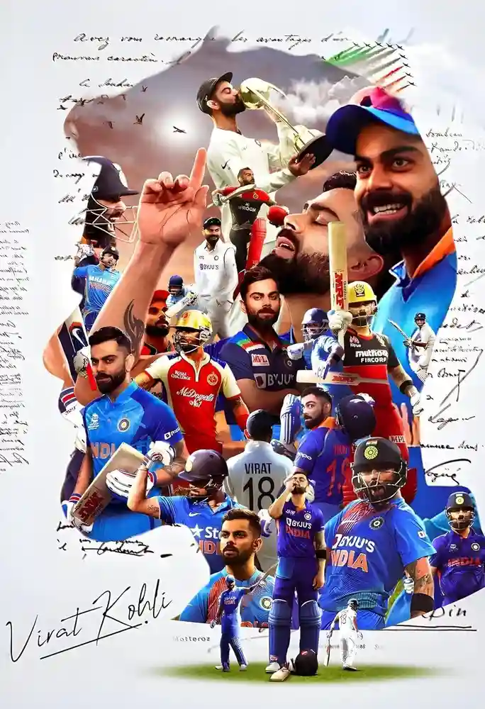
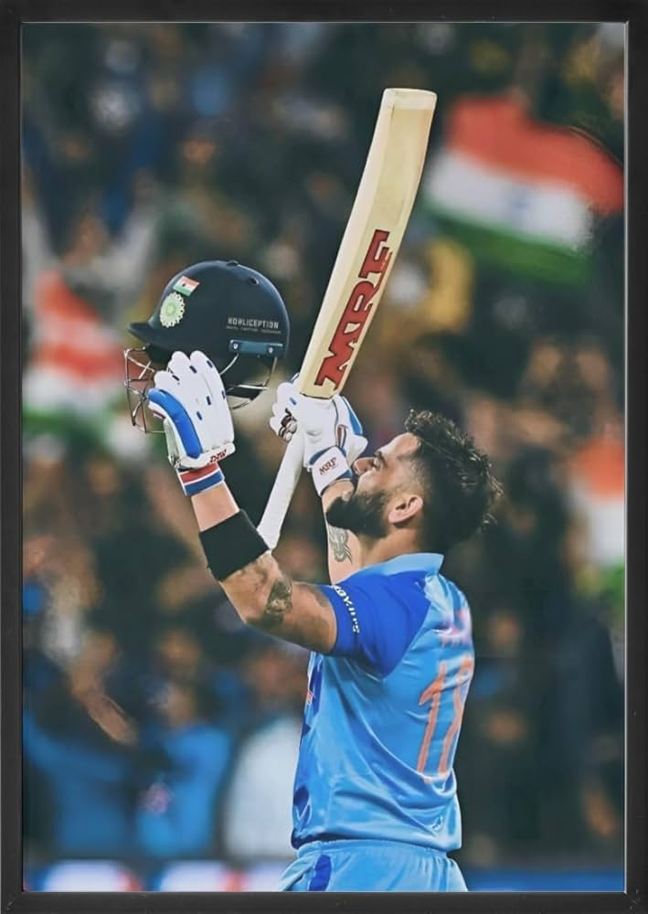
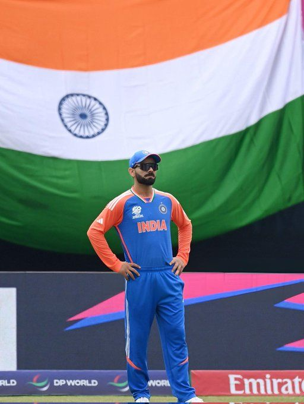
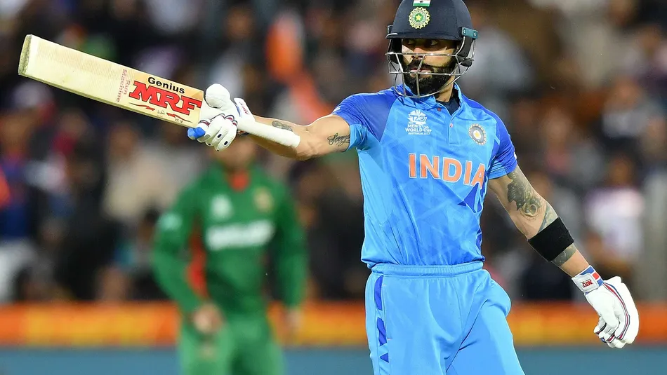
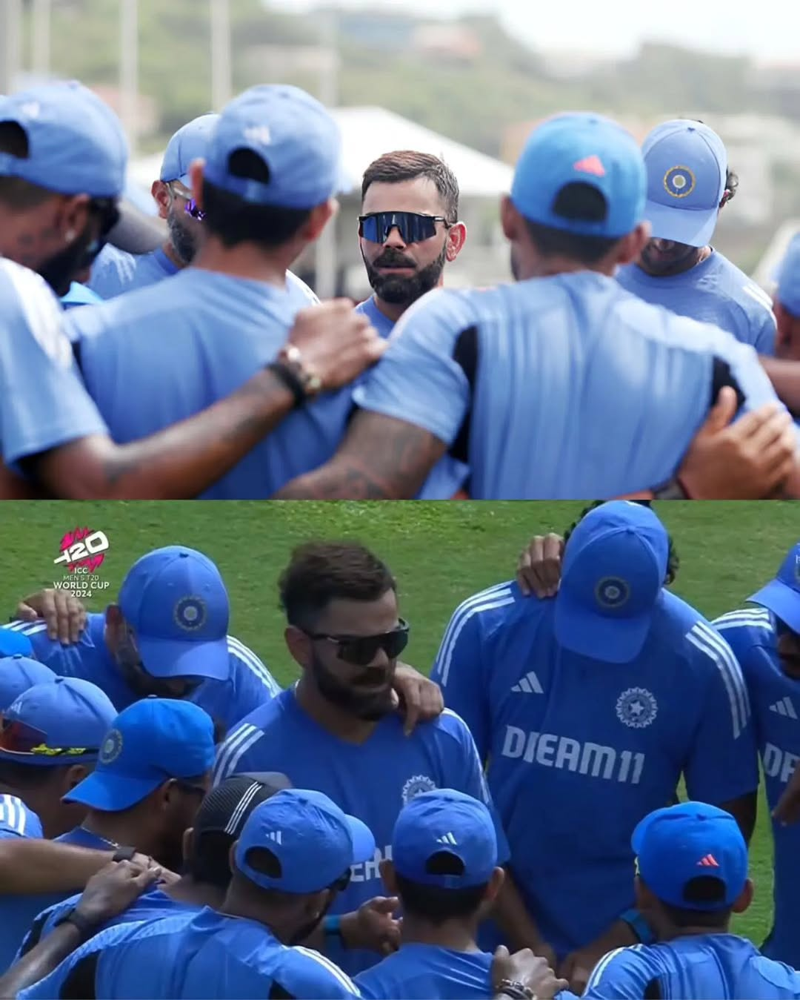
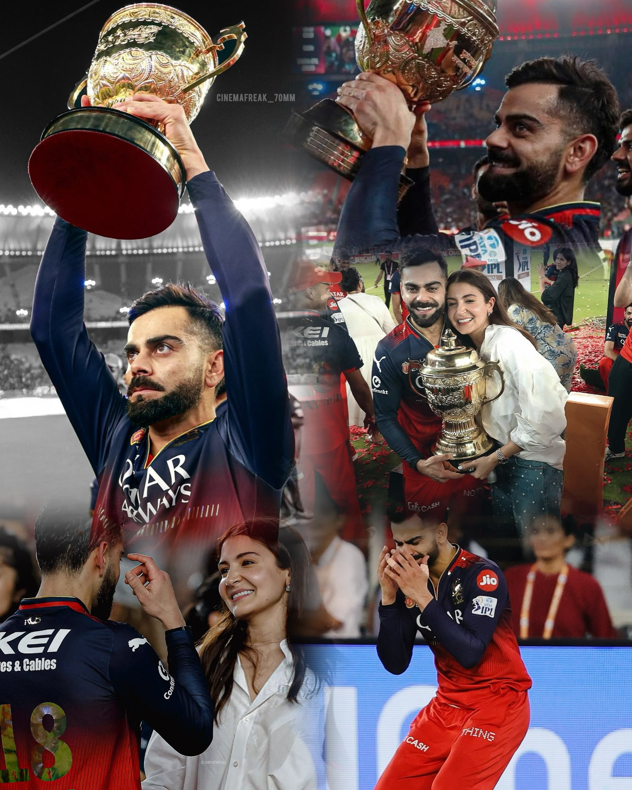

👑 Who is Virat Kohli?
Virat Kohli is one of the greatest modern cricketers, known for his aggressive play and unmatched consistency.
He made his international debut in 2008 and quickly became the backbone of India's batting lineup.
Kohli has scored over 25,000 international runs across formats, with 80+ centuries to his name.
As a captain, he transformed India into a dominant force, especially in Test cricket.
Off the field, he's admired for his fitness, discipline, and global influence as a sports icon.



🏆 Records & Achievements
- Most ODI centuries: 50+
- Fastest to 8k–12k ODI runs
- Over 25,000 international runs
- ICC Cricketer of the Decade (2011–2020)
- Multiple Wisden Cricketer of the Year titles
- Rajiv Gandhi Khel Ratna (2018), Padma Shri (2017)

🧢 Captaincy & Leadership
As India's captain, Kohli led from the front. His aggressive style and sharp cricketing mind transformed Team India into a dominant force worldwide.
- Most Test wins by an Indian captain: 40
- ICC Test Mace: 2017, 2018, 2019
- Highest win percentage across formats among Indian captains
- Revolutionized India's fitness culture


🏆 IPL 2025 Glory - RCB Champion
After years of heartbreak, Kohli finally lifted the IPL trophy with Royal Challengers Bangalore in 2025, a historic moment celebrated by millions of fans.

Virat Kohli lifting the long-awaited IPL trophy — a fairy-tale finish for RCB.